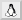

Tasten
Die Vorlage um die Tasten zu zeichnen lautet wie folgt:
[[Vorlage(Tasten, BEZEICHNUNG)]]
Es werden ausschließlich die Tasten dargestellt, die man auch so auf der Tastatur findet. Die Vorlage unterscheidet nicht zwischen Klein- und Großbuchstaben. Kleinbuchstaben können mit dieser Vorlage also nicht dargestellt werden.
Hinweis:
Die Darstellung der Maustasten funktioniert aktuell im Wiki, ist aber im Forum nicht möglich! (Stand: November 2015)
Diese Tabelle beinhaltet alle möglichen darstellbaren Tasten:
| Tasten | |||
| Taste | Bezeichnung | Taste | Bezeichnung |
| A bis Z | a..z, A..Z | space, leer, leerschritt, leerzeichen, leertaste | |
| 0 bis 9 | 0..9 | Tab ⇆ | tab, tabulator |
| F1 bis F16 | F1..F16, f1..f16 | Windows | win, windows |
| Alt | alt | ↑ | hoch, auf, up, rauf, pfeil-hoch, pfeil hoch, oben, auf und pfeil auf |
| Alt Gr | altgr, alt gr | ↓ | runter, ab, down, pfeil-runter, pfeil-ab, pfeil runter, pfeil ab, pfeil-unten, unten und pfeil unten |
| Ä , Ö und Ü | ä, ö und ü | ← | links, left, pfeil-links, pfeil links |
| ⌫ | backspace, löschen, rückschritt | → | rechts, right, pfeil-rechts, pfeil rechts |
| Strg | strg, ctrl, steuerung | , | ',' oder "," |
| Entf | del, entf, delete, entfernen | - | minus, - |
| ⏎ | return, enter, eingabe | . | . |
| Esc | esc , escape | # | raute, rautenzeichen, hash, # |
| [ | eckig_auf, eckig auf, squared open, squared-open, [ | ] | eckig_zu, eckig zu, squared close, squared-close, ] |
| { | geschweift_auf, curly open, curly-open, { | } | geschweift_zu, curly close, curly-close, } |
| Bild ↑ | bild auf, bild-auf, bild rauf, bild-rauf | + | plus |
| Bild ↓ | bild ab, bild-ab, bild runter, bild-runter | ` | gravis, grave, ', ` |
| Druck | druck, prtsc, print, sysrq | ^ | ^ |
| ⇩ | caps, feststell, feststelltaste, groß | < | < |
| ⇧ | shift, umschalt, umsch | > | > |
| ⇧ | shift2, umschalt2, umsch2 | ß | ß, sz |
| Fn | fn | Ende | ende, end |
| Pos1 | home, pos1, pos 1 | Einfg | einfg, ins, einfügen, insert |
| Super | super | ⇩ num | num, num-taste, num-lock-taste |
| ! | !,ausrufezeichen | ? | fragezeichen, question mark, question-mark, ? |
| = | gleich, equal, = | Pause | break, pause |
| / | schrägstrich, slash, / | ⇩ Rollen | rollen, bildlauf |
| & | &, und | ´ | akut, acute, ´ |
| : | :, doppelpunkt | " | anfuehrungsstriche, doublequote |
| ; | ;, semikolon | % | %, prozent |
| ⌥ | wahl, alternate, optionen | ⎄ | compose |
| ⌘ | apple, mac, apfel, cmd | RStrg | rstrg, rctrl, rsteuerung |
| \ | rückstrich, backslash, '\\' | * | * |
| Maustasten | |||
 | lmt, lmb |  | mmt, mmb |
 | rmb, rmt | ||
| Spiele | |||
 | wasd |  | pfeiltasten |
| Sondertasten | |||
|  | tux | Keym@n | cherry, keyman |
| @ | at, @ |  | menue |
| ubuntu |  | power, an | |
| Vol+ | vol, lauter | Vol- | vol-, leiser |
| Nicht verwendet | |||
| ANY | any, anykey | PANIC | panic |
| Kölsch | koelsch, kölsch | ||
Beispiel:
[[Vorlage(Tasten, strg)]]ergibt Strg[[Vorlage(Tasten, strg+a)]]ergibt Strg + A[[Vorlage(Tasten, alt+lmt)]]ergibt Alt +
Eine vollständige Übersicht über die komplette Syntax von Inyoka findet man unter Wiki/Syntax.
- Erstellt mit Inyoka
-
 2004 – 2017 ubuntuusers.de • Einige Rechte vorbehalten
2004 – 2017 ubuntuusers.de • Einige Rechte vorbehalten
Lizenz • Kontakt • Datenschutz • Impressum • Serverstatus -
Serverhousing gespendet von